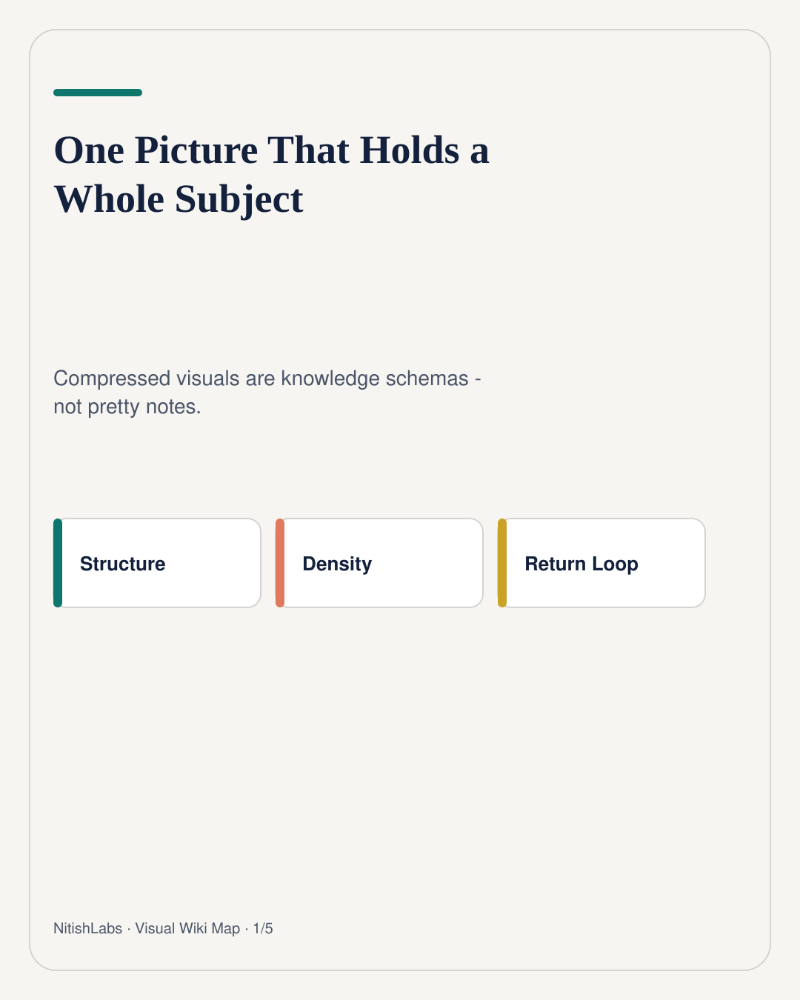
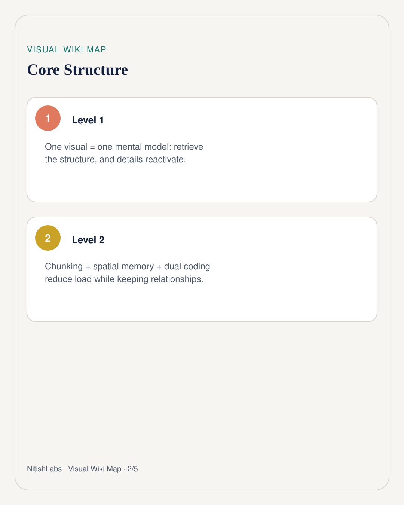
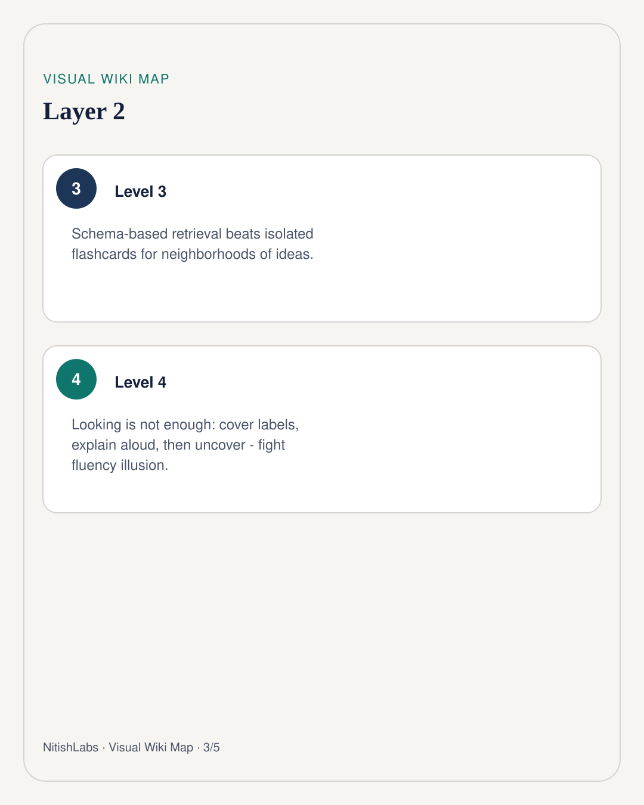
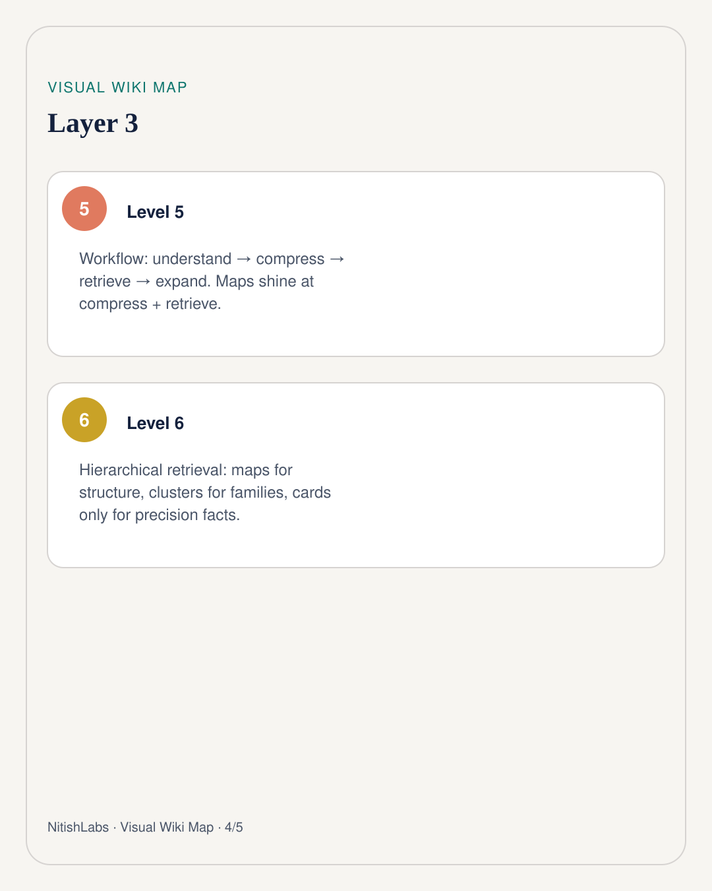
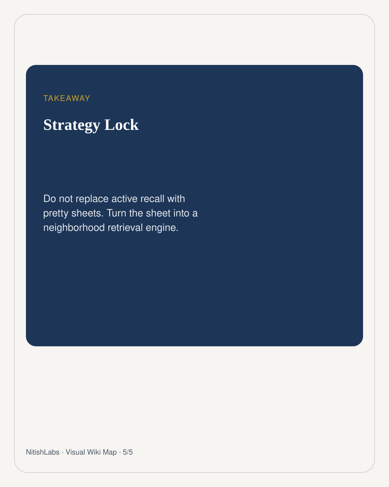

One Picture That Holds a Whole Subject
Those dense “wiki map” visuals are not decoration. Done right, one sheet stores a mental model - and your brain retrieves the neighborhood, not a lonely fact.
Visual Wiki Map
Compressed schema carousel · swipe





Nitish Chauhan’s bet is simple and slightly rebellious: after you understand a topic, compress it into one visual that preserves relationships. Not a shorter paragraph. A structure you can see.
Psychologists call the friendly version schema-based memory. Experts do not store more isolated facts. They store better structures. Chess masters see boards. Doctors see patterns. A good compression sheet tries to make that structure visible early.
Why the sheet feels unfairly effective
- Chunking - five algorithms become one family, so working memory stops drowning.
- Spatial memory - “PCA lived mid-right” is a real retrieval cue.
- Dual coding - words plus icons plus arrows beat paragraphs alone.
- Load control - one hierarchy, one story, less noise.
The upgrade: retrieve from the neighborhood
Classic flashcards are one cue → one answer. Clean. Also lonely. A compressed schema puts Decision Tree next to Random Forest next to XGBoost. When you try to recall one node, neighbors light up. That is spreading activation made visible.
Do not argue against retrieval. Argue against one-cue, zero-context retrieval for conceptual landscapes.
Recognition without explanation is a fluency trap. The fix is mean and useful:
- Cover explanations. Leave icons and labels.
- Explain each node aloud.
- Explain why it sits next to its neighbors - and why not next to another group.
- Uncover. Correct. Rebuild the sheet from memory every few weeks.
Where it sits in the learning stack
Understand (books / lectures) ↓ Compress (visual wiki map) ↓ Retrieve (maps + targeted cards) ↓ Expand (examples / teaching)
Hierarchical retrieval is the practical compromise: maps for structure, medium clusters for families, flashcards only for formulas and definitions that demand precision. Pretty sheets without retrieval practice are tourism. Retrieval without structure is a disconnected gym. NitishLabs wants both - compression that keeps the graph alive.